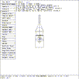
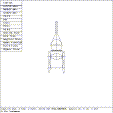

 Figure (wm-arm1): An Upper Arm Prototype
The ellipsoid primitive (e.2) is used to build the upper and lower parts of the left and right arms. The original solid ``e.2'' is oriented with the major axis of the ellipse oriented along the X axis. The arms need to have the major axis oriented along the Y axis, so first the solid is rotated. A more graceful arm is obtained by decreasing the length of the B and C vectors, and the resulting upper arm solid can be seen in Figure (wm-arm1) .
 Figure (wm-arm2): The Woodsman's Arms
mged> sed e.2
Select ``Rotate'' in the Solid Edit menu
mged> p 0 45 90
Select ``edit menu'' in the Solid Edit menu
Select ``scale B'' in the ELLIPSOID menu
mged> p 0.25
Select ``scale C'' in the ELLIPSOID menu
mged> p 0.25
mged>
This e.2 solid will now be moved into final position as the upper left arm. Then it will be duplicated three times to make the rest of the arm parts. Finally, each new arm part will be translated into the proper position, as seen in Figure (wm-arm2) .
Select ``Translate'' in the Solid Edit menu
mged> p -1.3 0 0
Select ``ACCEPT Edit'' in the Button menu - This is the upper left arm
mged> cp e.2 e.3
mged> cp e.2 e.4
mged> cp e.2 e.5
mged> sed e.3
Select ``Translate'' in the Solid Edit menu
mged> p -1.3 -2 0
Select ``ACCEPT Edit'' in the Button menu - This is the lower left arm
mged> sed e.4
Select ``Translate'' in the Solid Edit menu
mged> p 1.3 0 0
Select ``ACCEPT Edit'' in the Button menu - This is the upper right arm
mged> sed e.5
Select ``Translate'' in the Solid Edit menu
mged> p 1.3 -2 0
Select ``ACCEPT Edit'' in the Button menu - This is the lower right arm
mged>
{kind=link}
{kind=link}